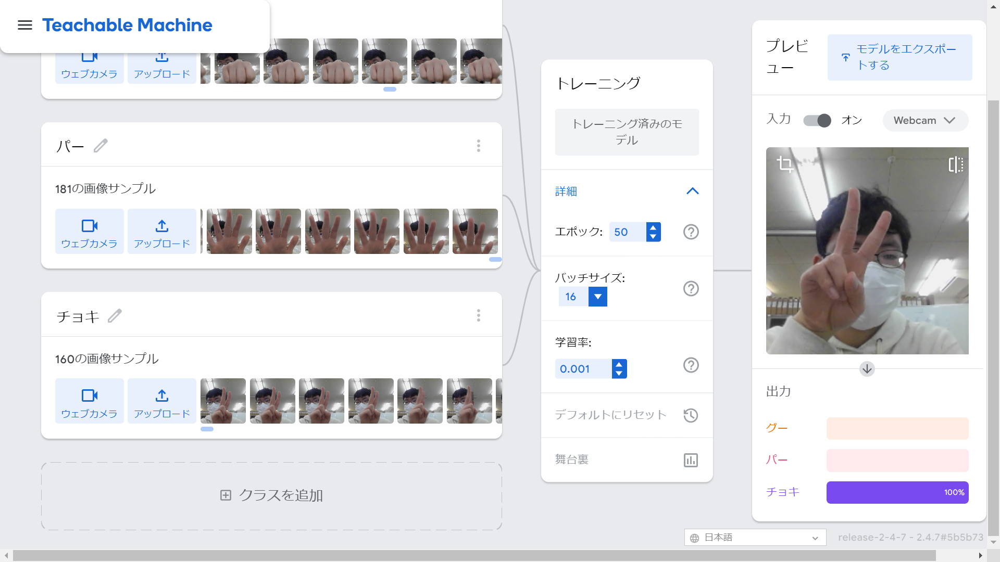

第2週目
2-1 １週目のレポートをHTMLで作る
１週目のレポート
1.内容
既に用意されたレポートファイルをHTML形式で作成した。
2.感想
今までレポートはwordやスプレッドシートで作成してこなかったので少し書き方が違って新鮮だった。
2-2 機械学習体験

1.内容
Teachable MachineでグーとパーとチョキのデータをＰＣのカメラで取り、
３種類を判別する機械学習モデルを作成した。
2.感想
これも体験入学で昔やったのでスムーズにできた。
今回は３種類で行ったが、もっと多くのものを判別できるものにしたいと思った。
2-3 VR（バーチャルリアリティー：Virtual Reality）会議室の体験
1.内容
VRゴーグルを使ってhorizonwookroomsで仮想空間での会議を行い、
もう一人はミラーリングPCを使ってサポートをした。
2.感想
VRゴーグルを使ったことがなかったので新鮮だった。
コントローラーで文字を書いたが、実際に書いているようだった。
今回の会議の内容では仮想空間で行う必要があまりないと思った。